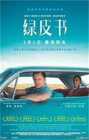

个人简介
====姓名： 娜沐晗====
==班级：新传1班==
=学号：2110683=
《平如美棠——我俩的故事》。
【饶平 著】
毛美棠和饶平如两人1948年结婚，相守了半个世纪，可就在即将迎来他们60周年钻石婚的时候，病痛夺走了美棠的生命，之后有整整半年时间，老爷子每日是睡前醒后，都是难过，后来他一笔一画地从相识相爱到相别相离的日日夜夜都画下来，将100多幅整理成《平如美棠——我俩的故事》。
最爱的美食是湖南美食
口味虾 毛氏红烧肉 永州血鸭
东安鸡 永州喝螺 宁远血鸭
冰糖湘莲 炒素什锦 翠竹粉蒸鱼
大边炉 洞庭金龟 发丝百叶
芙蓉鲫鱼 干蒸湘莲 红烧龟肉
椒盐兔片 金鱼戏莲 开屏柴把桂鱼
腊味合蒸 麻仁酥鸭 面包鸡排
清润防热感 马蹄白果蛋花汤
双色鱿鱼卷 五元神仙鸡
鲜鱼生菜汤 湘味方肉 青椒炒肉

《绿皮书》
《绿皮书》在我看来，是很温暖治愈的一部电影。
人生并不是一帆风顺，即使你的生活已经达到了一定的高度，但是对于你想弥补的遗憾，也许至今都毫无办法。
可是人生的旅途总会给你带来一些不一样的惊喜，填补你所无法挽回的遗憾，就像影片中，唐遇见托尼一样，他们更像是彼此的救赎。
这部电影起初最吸引我的是影片开头:“灵感来源于真实故事”这句话。
copyright©2023-2024 all right reserved
制作人学号：2110683